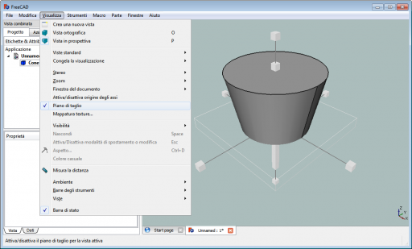
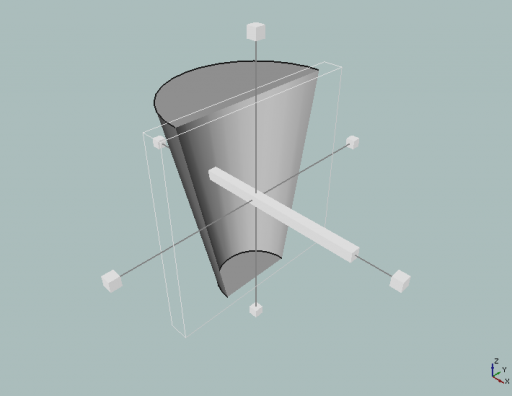
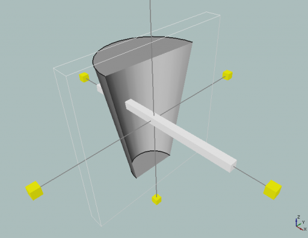
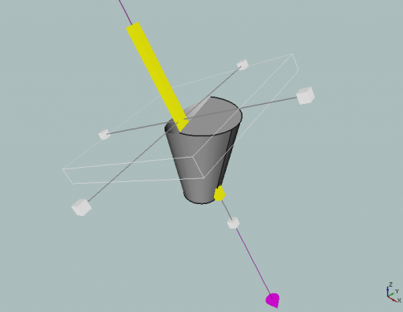
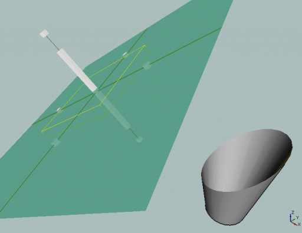
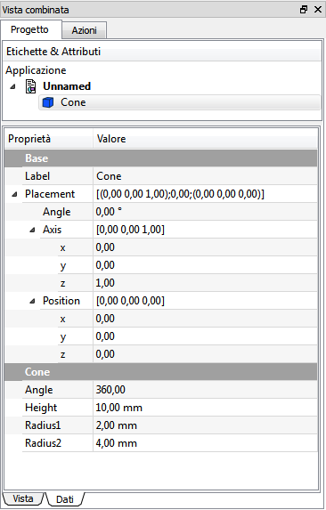

|
| Posizione nel menu |
|---|
| Visualizza → Piano di taglio |
| Ambiente |
| All |
| Avvio veloce |
| Vedere anche |
Un piano di taglio divide lo spazio dell'oggetto in due metà. Tutte le parti dell'oggetto che si trovano in un semispazio sono visibili, mentre le parti nell'altra metà sono invisibili. Gli oggetti sembrano affettati e diventano visibili i dettagli interni. Il piano si attiva nel menu Visualizza → Piano di taglio.
Visualizzare il solido non vuoto
Quando si attiva Clipping Plane i solidi vengono mostrati vuoti. Per mostrare un solido non vuoto si può utilizzare un piccolo accorgimento. Nella scheda Vista dell'oggetto modificare l'illuminazione del solido (Lighting) da due lati (Two Side) a un lato (One Side) per far apparire la parte interna del solido completamente nera.
Un'altra possibilità è quella di lasciare Lightning impostato su Two Side e cambiare il colore interno del solido attivando Menu Modifica -> Preferenze -> Visualizzazione -> Attiva il colore di retroilluminazione. Ma in questo modo l'effetto di ombreggiatura sarà ancora presente. Vedere Forum Thread http://forum.freecadweb.org/viewtopic.php?f=3&t=4371&start=20#p94850
Dalla versione 0.13 di FreeCAD questo oggetto ha un nuovo aspetto. Quando si attiva la funzione, il piano non è più visibile e nella Vista combinata si apre una finestra per impostare la sua posizione.
Impostare un piano standard
{kind=link}
Opzioni
- Offset: scostamento
- Flip: inverte la direzione della vista
Impostare un piano orientato
{kind=link}
Questa descrizione vale solo fino alla versione 0.13 di FreeCAD
Manipolare il Piano di taglio
Il piano di taglio può essere modificato tramite i suoi manipolatori.
Dopo l'attivazione il piano appare nell'oggetto e sono mostrati sette manipolatori a forma di piccole scatole: uno su ciascuna estremità dei tre assi e uno al centro dell'asse del piano normale. Ci sono inoltre quattro manipolatori non visibili: il piano stesso e la parte sottile dei tre assi.
- Scalare
- Per scalare l'oggetto cliccare con il tasto sinistro sui box manipolatori alla fine degli assi e muovere il mouse avanti o indietro. Secondo il tipo di oggetto i manipolatori agiscono in modo autonomo o sincrono.
- Spostare fuori del piano
- Per spostare l'oggetto lungo il suo vettore normale, trascinare la scatola lunga al centro di un asse con il tasto sinistro del mouse. Per ogni piano di sezione esiste un solo manipolatore lungo il vettore normale.
- Spostare il piano
- Per spostare il centro del piano, fare clic sull'oggetto piano e trascinarlo nella posizione desiderata.
- Ruotare il piano
- Cliccare sulla parte sottile degli assi per applicare al manipolatore la modalità rotazione.
Esempio
Nella barra principale selezionare Visualizza → Piano di taglio.
Appare il piano di sezione nella posizione di default.
Una parte dell'oggetto scompare.

{kind=link}
Posizionare il cursore su un asse e premere il tasto Ctlr per commutare la posizione del piano di sezione fino a individuare quella desiderata.

{kind=link}
Con i manipolatori che si trovano alla fine degli assi è possibile scalare il piano.

{kind=link}
Per spostare il piano selezionare il manipolatore scatola lunga e muovere il mouse.

{kind=link}
Per ruotare il piano selezionare un asse nella parte sottile.
Per spostare il piano e separarlo dall'oggetto cliccare su un'area interna al piano, tenere premuto il tasto sinistro e muovere il mouse.

{kind=link}
Controllare nella scheda dati i valori della posizione ed eventualmente modificarli.

{kind=link}
Per uscire dalla funzione disattivarla tramite il menu Visualizza → Piano di taglio.
Nota: questo comando è differente dai comandi Ruota e Sposta.
Esso muove solo l'oggetto senza modificare la posizione dei piani, osservare che l'icona degli assi rimane sempre nella stessa posizione.
Con il tasto Ctrl premuto, alternando la pressione sul destro e sul sinistro del mouse si possono produrre azioni di trasformazione simili.